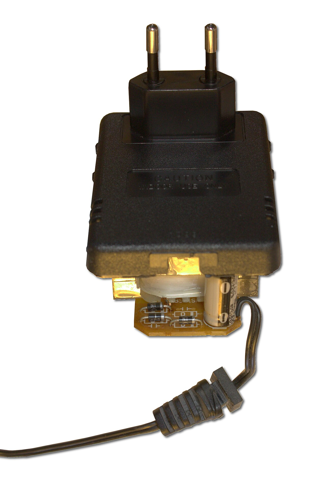
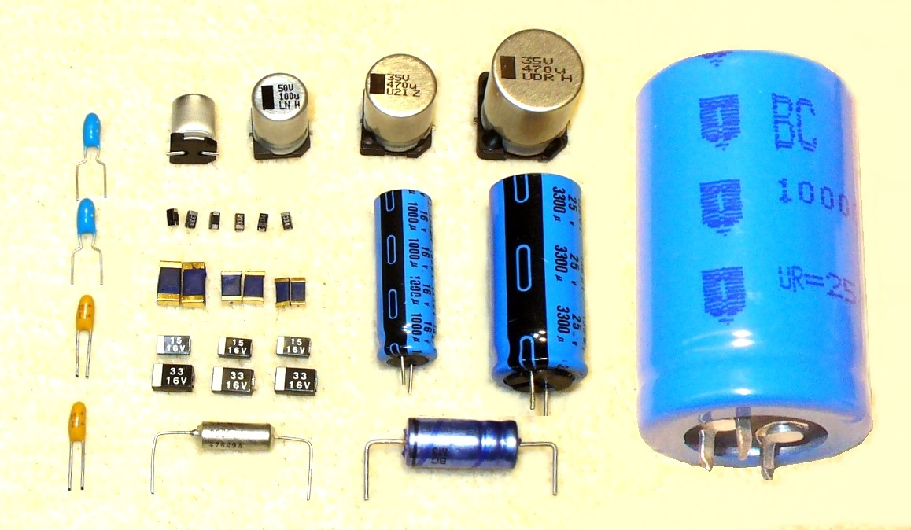

วงจรเรียงกระแส
และวงจร
กรองแรงดัน
วันนี้ 4 ชั่วโมง ทำอะไรบ้าง
| เวลา | กิจกรรม | นักเรียนทำอะไร |
|---|---|---|
| 0:00–0:15 | เปิดเรื่อง + ทบทวนหน่วยที่ 1 | ดูภาพอะแดปเตอร์ · โหวตทบทวน |
| 0:15–0:30 | แบบทดสอบก่อนเรียน | ทำ 20 ข้อบนมือถือ |
| 0:30–1:20 | 5.1 แผนผังแหล่งจ่าย · 5.2 วงจรเรียงกระแส | ทายก่อนเฉลย · ตัวจำลอง · ฝึกคำนวณ |
| 1:20–1:30 | พัก | – |
| 1:30–2:00 | 5.3 วงจรกรองแรงดัน · ออสซิลโลสโคปเบื้องต้น | คลิป · ฝึกอ่านจอสโคป |
| 2:00–3:30 | ใบงานที่ 2.1 | ต่อวงจรจริง หรือแล็บเสมือน |
| 3:30–4:00 | เทียบค่าวัดกับค่าคำนวณ · สรุป · แบบทดสอบหลังเรียน | สุ่มตอบคำถาม · ทำ 20 ข้อ |
เรียนจบวันนี้ นักเรียนสามารถ…
- อธิบายการทำงานของวงจรเรียงกระแสครึ่งคลื่น เต็มคลื่น บริดจ์ และวงจรกรองแรงดันได้ (4.1 K2)
- คำนวณแรงดันเอาต์พุต แรงดันพลิ้ว และค่าตัวเก็บประจุกรองได้ (4.2 K3)
- ต่อวงจรและวัดแรงดันกับรูปคลื่นด้วยออสซิลโลสโคปได้ (4.3 S3)
เกณฑ์ผ่าน: ร้อยละ 80 · ใบงานที่ 2.1 16 / 20 · แบบทดสอบ 16 / 20
เสียบไฟบ้าน 220 V~ แต่ปลายสายได้ 12 V ไฟตรง ได้อย่างไร?

- ในภาพเห็นชิ้นส่วนอะไรบ้าง? (ดูของใหญ่ที่สุดก่อน)
- ชิ้นไหนทำให้แรงดัน ลดลง?
- ชิ้นไหนทำให้ไฟ ไหลทางเดียว? (นึกถึงหน่วยที่ 1)
- ทายว่าชิ้นทรงกระบอกทำหน้าที่อะไร
ในอะแดปเตอร์มี 3 ชิ้นหลัก
| คำถามในภาพ | คำตอบ |
|---|---|
| ชิ้นใหญ่ที่สุด ทำให้แรงดันลดลง | หม้อแปลง |
| ชิ้นที่ทำให้ไฟไหลทางเดียว | ไดโอด (หน่วยที่ 1) |
| ชิ้นทรงกระบอก | ตัวเก็บประจุ ทำให้แรงดันเรียบขึ้น |
วันนี้เราจะต่อวงจรแบบนี้เองทั้งหมด แล้วดู “หน้าตาของไฟ” ด้วยออสซิลโลสโคป
ไดโอดซิลิกอนนำกระแสเมื่อใด?
ยังไม่รู้ก็ไม่เป็นไร ตอบตามที่เข้าใจ
เปิด แบบทดสอบ → เลือก “ก่อนเรียน” → ทำ 20 ข้อ → กดส่ง
quiz.html (ลิงก์อยู่ในหน้าแรกของวิชา)
แผนผังของแหล่งจ่าย
ไฟฟ้ากระแสตรง
จากไฟบ้านถึงไฟตรงคงที่ ผ่าน 4 ภาค
ไฟบ้านเป็นไฟสลับ แต่วงจรอิเล็กทรอนิกส์ต้องการไฟตรง
ไฟบ้าน (ไฟสลับ AC)
220 V · 50 Hz · กลับขั้ว 100 ครั้งต่อวินาที
เซนเซอร์ ไมโครคอนโทรลเลอร์ รีเลย์
ต้องการไฟตรงที่แรงดันคงที่ เช่น 5 V · 12 V · 24 V
แหล่งจ่ายไฟฟ้ากระแสตรง (DC Power Supply) = ตัวแปลงไฟสลับให้เป็นไฟตรง
แต่ละภาคทำหน้าที่อะไร
| ภาค | หน้าที่ | เปรียบเหมือน… |
|---|---|---|
| ① หม้อแปลงไฟฟ้า | ลดแรงดันลง + แยกวงจรออกจากไฟบ้าน | ลดแรงดันน้ำจากท่อประปาหลัก |
| ② วงจรเรียงกระแส | ใช้ไดโอดให้ไฟไหลทางเดียว | ประตูหมุนทางเดียว |
| ③ วงจรกรองแรงดัน | ใช้ตัวเก็บประจุทำให้แรงดันเรียบขึ้น | ถังพักน้ำ |
| ④ วงจรรักษาระดับแรงดัน | ให้แรงดันคงที่แม้ไฟบ้านหรือโหลดเปลี่ยน | วาล์วคุมแรงดัน |
วันนี้เรียนภาค ①–③ · ภาค ④ เรียนสัปดาห์หน้า
ภาคใดเปลี่ยนไฟสลับให้ไหลทางเดียว?
หม้อแปลง 12 V ให้แรงดันยอดเท่าใด?
ทุกครั้งที่คำนวณแรงดันขาออก หรือเลือกพิกัดตัวเก็บประจุ ต้องเริ่มจากค่ายอดเสมอ
หม้อแปลงต่อไปนี้ให้ Vm เท่าใด?
| หม้อแปลง (rms) | Vm |
|---|---|
| 9 V | 12.73 V |
| 6 V | 8.48 V |
| 24 V | 33.94 V |
ภาคจ่ายไฟ AC → DC แบบเชิงเส้น ทำงานอย่างไร
- สังเกต หม้อแปลง → ไดโอด → ตัวเก็บประจุ
- รูปคลื่นหลังแต่ละภาคเป็นอย่างไร
- ตรงกับภาพที่ 2.1 ไหม?
วงจรเรียงกระแส
ครึ่งคลื่น · เต็มคลื่น · บริดจ์
ใช้ไดโอดเป็นประตูทางเดียวให้ไฟสลับ
ไดโอด 1 ตัว ต่ออนุกรมกับโหลด
ได้ไฟ ครึ่งเดียว อีกครึ่งหายไป
ครึ่งคาบบวก
- ไดโอดไบแอสตรง → นำกระแส
- แรงดันที่โหลด ≈ vs − 0.7 V
ครึ่งคาบลบ
- ไดโอดไบแอสกลับ → กั้นกระแส
- แรงดันที่โหลด = 0 V
หม้อแปลง 12 V · วงจรครึ่งคลื่น
ใช้หม้อแปลง 12 V แต่มิเตอร์ DC อ่านได้แค่ราว 5 V เพราะเสียไปครึ่งคาบ
หม้อแปลง 9 V · ครึ่งคลื่น · หา Vp(out) และ Vdc
ง่ายและถูก แต่เสียพลังงานครึ่งหนึ่ง
ข้อดี
- ใช้ไดโอดตัวเดียว
- ต่อง่าย ราคาถูก
ข้อเสีย
- ใช้พลังงานได้แค่ครึ่งคาบ
- ความถี่ 50 Hz ช่องว่างยาว → กรองให้เรียบยาก
จึงใช้กับงานกระแสต่ำเท่านั้น
ไดโอด 4 ตัว ต่อเป็นรูปสี่เหลี่ยม
- ใช้หม้อแปลงธรรมดา ไม่ต้องมีแท็ปกลาง
- ใช้ได้ทั้ง 2 ครึ่งคาบ
ครึ่งคาบลบ (ขั้วบน − ขั้วล่าง +) ไดโอดคู่ใดนำกระแส?
ทั้ง 2 ครึ่งคาบ กระแสผ่านโหลดทิศเดียวกัน
| ครึ่งคาบ | ไดโอดที่นำกระแส | ทางเดินกระแส | ไดโอดที่ไบแอสกลับ |
|---|---|---|---|
| บวก | D2, D4 | ขั้วบน → D2 → RL (+ ลง −) → D4 → ขั้วล่าง | D1, D3 |
| ลบ | D3, D1 | ขั้วล่าง → D3 → RL (+ ลง −) → D1 → ขั้วบน | D2, D4 |
ผ่านไดโอด 2 ตัวทุกครั้ง → แรงดันตกรวม 0.7 + 0.7 = 1.4 V
เปรียบเทียบทั้ง 3 แบบ ดูไดโอดที่สว่างและรูปคลื่น
หม้อแปลง 12 V · วงจรบริดจ์
หม้อแปลง 9 V · บริดจ์ · หา Vp(out) และ Vdc
วาดรูปคลื่น vout 2 คาบ ของวงจรครึ่งคลื่นและบริดจ์
- วาดคลื่นไซน์ vs เป็นเส้นประก่อน
- ครึ่งคลื่น: ครึ่งคาบลบเป็นอย่างไร?
- บริดจ์: ครึ่งคาบลบพลิกขึ้นหรือหายไป?
- นับจำนวนยอดใน 1 คาบของ vs → บอกความถี่
ครึ่งคลื่น vs แท็ปกลาง vs บริดจ์
| ครึ่งคลื่น | แท็ปกลาง | บริดจ์ | |
|---|---|---|---|
| ไดโอด | 1 ตัว | 2 ตัว | 4 ตัว |
| หม้อแปลง | ธรรมดา | มีแท็ปกลาง (12-0-12) | ธรรมดา |
| Vp(out) | Vm − 0.7 = 16.27 V | Vm − 0.7 = 16.27 V | Vm − 1.4 = 15.57 V |
| Vdc | 0.318 Vp(out) = 5.17 V | 0.636 Vp(out) = 10.35 V | 0.636 Vp(out) = 9.90 V |
| ความถี่ขาออก | 50 Hz | 100 Hz | 100 Hz |
| PIV ต่อไดโอด เสริม | Vm ≈ 17 V | 2Vp(out) + 0.7 ≈ 33 V | Vp(out) + 0.7 ≈ 16 V |
ไดโอดที่ไบแอสกลับต้องทน PIV (Peak Inverse Voltage)
- บริดจ์ 12 V: PIV ≈ 15.57 + 0.7 = 16.3 V ต่อไดโอด
- หลักเผื่อ 2 เท่า → ต้องการ VRRM ≥ 33 V → 1N4001 (50 V) ขึ้นไปใช้ได้
- ใบงานใช้ 1N4007 (VRRM 1000 V · IF(AV) 1 A) เผื่อมาก ปลอดภัย
ข้อความต่อไปนี้ ถูก หรือ ผิด?
| ข้อความ | เฉลย |
|---|---|
| 1. ครึ่งคลื่นใช้ไดโอดตัวเดียว | ✓ ถูก |
| 2. บริดจ์ต้องใช้หม้อแปลงที่มีแท็ปกลาง | ✗ ผิด (แท็ปกลางคือวงจรเต็มคลื่นอีกแบบ) |
| 3. ในบริดจ์ กระแสผ่านไดโอดทีละ 2 ตัว | ✓ ถูก |
| 4. มิเตอร์ย่าน V~ อ่านค่ายอดของหม้อแปลง | ✗ ผิด (อ่านค่า rms) |
พัก 10 นาที
วงจรกรองแรงดัน
ด้วยตัวเก็บประจุ
ทำให้ลูกคลื่นเรียบ จนเหลือแค่แรงดันพลิ้ว
ไหลทางเดียวแล้ว แต่ขึ้นลงจาก 0 ถึงค่ายอด
- ไมโครคอนโทรลเลอร์ได้ไฟ 0 V ทุก 10 ms → รีเซ็ตตัวเองตลอด
- วิธีที่ง่ายที่สุด: ต่อตัวเก็บประจุขนาดใหญ่ขนานกับโหลด
ตัวเก็บประจุ = ถังพักน้ำ
- แรงดันขึ้น → C ประจุ (เติมถัง)
- แรงดันลด → C คายประจุจ่ายโหลดแทน
- ถังใหญ่ (C มาก) → ระดับน้ำลดลงน้อย
- เปิดก๊อกแรง (โหลดมาก) → น้ำลดเร็ว
ประจุจนเกือบถึงยอด แล้วคายประจุจนถึงยอดถัดไป
- ช่วงขึ้น: ไดโอดนำ C ประจุ
- ช่วงลง: ไดโอดหยุด C คายประจุจ่ายโหลด
- เหลือขึ้นลงนิดหน่อย = แรงดันพลิ้ว
คำนวณแรงดันพลิ้วโดยประมาณ
| IL | กระแสโหลด (A) |
| f | ความถี่ลูกคลื่น: 50 Hz ครึ่งคลื่น · 100 Hz เต็มคลื่น |
| C | ค่าตัวเก็บประจุ (F) · 1000 µF = 0.001 F |
แรงดันเฉลี่ย ≈ Vp(out) − Vr(pp)/2
บริดจ์ 12 V · IL = 100 mA · C = 1000 µF
เทียบกับไม่มี C ที่ได้ Vdc แค่ 9.90 V
โหลดเดิม 100 mA เปลี่ยนวงจร / เปลี่ยนเป้าหมาย
② ครึ่งคลื่น · C 1000 µF
③ บริดจ์ · ต้องการพลิ้วไม่เกิน 0.5 V
ค่ามาตรฐานที่มีขาย เช่น 470 · 1000 · 2200 · 4700 µF → เลือกค่าที่สูงกว่าถัดไป
ถ้าเพิ่มกระแสโหลดเป็นสองเท่า โดยใช้ C เท่าเดิม แรงดันพลิ้วเป็นอย่างไร?
เปลี่ยน C จาก 470 µF เป็น 2200 µF (โหลดเท่าเดิม) ข้อใดถูก?
C ใหญ่ขึ้น หรือโหลดกินกระแสมากขึ้น แรงดันพลิ้วเปลี่ยนอย่างไร
บริดจ์จ่ายกระแส 200 mA ใช้ C 2200 µF แรงดันพลิ้วเท่าใด?
ความจุสูงในขนาดเล็ก แต่มีขั้ว

- แถบสี + เครื่องหมาย − บนตัวถัง = ขาลบ
- ขายาวกว่า = ขาบวก
- ตัวพิมพ์ค่าความจุ (µF) และพิกัดแรงดัน (V)
- ค่าความจุและพิกัดสูง → ตัวใหญ่ขึ้น
พิกัดแรงดัน ≥ 1.5 เท่า ของแรงดันยอด
ค่าพิกัดมาตรฐานที่พบบ่อย: 10 · 16 · 25 · 35 · 50 · 63 V
ใบงาน 2.1 ใช้ 35 V → ปลอดภัย
หม้อแปลง 24 V ต่อบริดจ์ (Vp(out) ≈ 32.5 V) ควรใช้ตัวเก็บประจุพิกัดอย่างน้อยเท่าใด?
ข้อควรระวังเมื่อใช้ตัวเก็บประจุ
ห้ามกลับขั้ว
ต่อกลับขั้วหรือเกินพิกัด
→ ร้อน บวม อาจระเบิด
ตรวจขั้วก่อนจ่ายไฟ
ขาบวกต่อทางขั้วบวกของวงจร
ให้ครูตรวจทุกครั้ง
ยังมีไฟค้าง
ปิดเครื่องแล้วยังเก็บประจุ
คายประจุผ่านตัวต้านทานก่อนแตะ
ใส่ตัวเก็บประจุแล้ว รูปคลื่นเปลี่ยนไปอย่างไร
- รูปคลื่นก่อนและหลังต่อตัวเก็บประจุ
- ครึ่งคลื่นมีช่วงคายประจุยาวแค่ไหน
- เตรียมดูจอแบบนี้ในใบงาน
ออสซิลโลสโคป
เบื้องต้น
เครื่องที่ทำให้เรา “มองเห็น” ไฟฟ้า
ค่าที่อ่านได้ = จำนวนช่อง × ค่าต่อช่อง
VOLTS/DIV (แกนตั้ง)
แรงดันต่อ 1 ช่อง เช่น 5 V/div
สูง 2.4 ช่อง × 5 V = 12 V
TIME/DIV (แกนนอน)
เวลาต่อ 1 ช่อง เช่น 5 ms/div
1 คาบยาว 4 ช่อง × 5 ms = 20 ms
พลิ้วแค่ 0.3 V บนไฟตรง 15 V → ตัดไฟตรงออกก่อน
DC coupling
เห็นทั้งไฟตรงและพลิ้ว · ใช้ดู Vp(out) เทียบกับกราวด์
พลิ้วเล็กจนมองแทบไม่เห็น
AC coupling
ตัดไฟตรงออก เหลือเฉพาะส่วนที่ขึ้นลง
ลด VOLTS/DIV จนเห็นพลิ้วชัด แล้วอ่าน Vr(pp)
ใบงานตอนที่ 3: “วัดแรงดันพลิ้วยอดถึงยอดด้วยออสซิลโลสโคปแบบคัปปลิงไฟสลับ (AC Coupling)”
คีบสายกราวด์ของโพรบทุกเส้นไว้จุดเดียวกัน
- สายกราวด์ (ปากคีบสั้น) ของโพรบทุกช่องต่อร่วมกันภายในเครื่อง
- คีบกราวด์ไว้ที่ราง − ของโหลด แล้ววัด vout
- ในวงจรบริดจ์ ห้ามคีบกราวด์โพรบอีกเส้นไว้ที่ขาหม้อแปลง → ลัดวงจรไดโอด → วัด vs แยกทีละครั้ง
อ่านค่ายอดและความถี่จากจอ 10 ข้อ
ใช้งานออสซิลโลสโคปขั้นพื้นฐาน
- ต่อโพรบและสายกราวด์อย่างไร
- ปรับจนรูปคลื่นเต็มจอพอดี
- อ่านค่าจากจำนวนช่อง
การต่อวงจรเรียงกระแส
และวงจรกรองแรงดัน
4 ตอน · 20 คะแนน · ผ่าน 16 คะแนน
ทำได้ 2 ทาง
ทาง ก: อุปกรณ์จริง (1 ชุด/กลุ่ม)
- หม้อแปลง 220/12 V 1 A ในกล่องปิด
- ออสซิลโลสโคปดิจิทัล · มัลติมิเตอร์ดิจิทัล
- 1N4007 × 4 · C 470 และ 2200 µF 35 V
- R 1 kΩ 0.5 W · 220 Ω 2 W · แผงต่อวงจร
ทาง ข: แล็บเสมือน
- วงจร + ออสซิลโลสโคปเสมือน + มิเตอร์
- เลือกวงจร · C · โหลด ได้ครบทุกกรณี
- ค่าที่วัดได้ต่างจากสูตรเล็กน้อย เหมือนของจริง
- เปิดบนมือถือ/คอมพิวเตอร์ได้
ก่อนเริ่มต่อวงจร
- ด้าน 220 V เป็นหน้าที่ของครู: หม้อแปลงต่อไฟบ้านไว้ในกล่องปิด · นักเรียนต่อเฉพาะด้าน 12 V
- ตรวจขั้วตัวเก็บประจุทุกตัวก่อนจ่ายไฟ และให้ครูตรวจวงจรทุกครั้ง
- R 220 Ω รับกำลังราว 1 W และร้อน ห้ามจับขณะจ่ายไฟ · คายประจุก่อนแก้วงจร
ตอนที่ 1 ครึ่งคลื่น · ตอนที่ 2 บริดจ์
ตอนที่ 1 ครึ่งคลื่น (ภาพที่ 2.2)
- ต่อวงจร RL 1 kΩ ให้ครูตรวจ
- วัด Vs(rms) ย่าน V~ และ Vdc ที่โหลดย่าน V⎓
- วัดรูปคลื่นที่โหลด บันทึก Vp(out) และความถี่
ตอนที่ 2 บริดจ์ (ภาพที่ 2.3)
- ปิดไฟ ต่อวงจร RL 1 kΩ แล้ววัดเหมือนตอนที่ 1
- วาดรูปคลื่นของตอนที่ 1 และ 2 ลงในกรอบ
ตอนที่ 3 กรองแรงดัน · ตอนที่ 4 เปรียบเทียบ
ตอนที่ 3 ต่อ C ขนานกับโหลดของบริดจ์
- ปิดไฟ ขาบวกต่อทางขั้วบวก ให้ครูตรวจ
- วัด Vdc และ Vr(pp) (AC coupling) ครบ 4 กรณี: C 470/2200 µF × RL 1 kΩ/220 Ω
ตอนที่ 4 เปรียบเทียบและสรุป
- คำนวณ Vdc ครึ่งคลื่นและบริดจ์จาก Vs(rms) ที่วัดได้ แล้วเทียบกับค่าที่วัด
- สรุปผลของค่าความจุและกระแสโหลดต่อแรงดันพลิ้ว
คำนวณ Vr(pp) ใช้ IL ≈ Vdc ÷ RL ที่วัดได้
แล็บเสมือน: วัด Vs(rms) · Vdc · Vp(out) · ความถี่
แล็บเสมือน: Vdc และ Vr(pp) ทั้ง 4 กรณี
ใบงานที่ 2.1
พิมพ์ ใบงานที่ 2.1 · ไม่มีอุปกรณ์? ใช้ แล็บเสมือน · เสร็จก่อน? ไปทำ แบบฝึกหัดออนไลน์
20 คะแนน · ผ่าน 16 คะแนน (80%)
| ที่ | รายการประเมิน | คะแนน |
|---|---|---|
| 1 | ต่อวงจรครึ่งคลื่นถูกต้อง วัดแรงดันและความถี่ได้ค่าในช่วงที่ยอมรับ (ตอนที่ 1) | 4 |
| 2 | ต่อวงจรบริดจ์ถูกต้อง วัดค่าครบ และวาดรูปคลื่นทั้งสองแบบถูกต้อง (ตอนที่ 2) | 5 |
| 3 | ต่อตัวเก็บประจุถูกขั้ว วัดและคำนวณแรงดันพลิ้วครบทั้งสี่กรณี (ตอนที่ 3) | 7 |
| 4 | คำนวณเทียบกับค่าที่วัดและสรุปผลได้ถูกต้อง (ตอนที่ 4) | 4 |
ทำไมค่าที่วัดได้ ไม่ตรงสูตรเป๊ะ?
| บริดจ์ 12 V · RL 1 kΩ | คำนวณ | แล็บเสมือน | ของจริง (เติมเอง) |
|---|---|---|---|
| Vdc ไม่มี C | 9.90 V | 9.49 V | |
| Vr(pp) C 470 µF | ≈ 0.32 V | 0.27 V |
- ไดโอดนำกระแสเฉพาะตอนแรงดันเกิน 1.4 V ช่วงใกล้ศูนย์จึงหายไป → Vdc ต่ำกว่าสูตรเล็กน้อย
- สูตรพลิ้วคิดว่า C คายประจุตลอดคาบ ของจริงคายสั้นกว่า → พลิ้วจริงน้อยกว่าสูตรเล็กน้อย
- หม้อแปลงจริงขณะโหลดเบามักให้แรงดันสูงกว่าป้าย · ใช้ Vs(rms) ที่วัดได้มาคำนวณ
4 ภาค · 3 วงจรเรียงกระแส · กรองให้เรียบ · วัดด้วยสโคป
5.1 แผนผังแหล่งจ่าย
หม้อแปลง → เรียงกระแส → กรอง → รักษาระดับ · มิเตอร์อ่าน rms · คำนวณใช้ Vm = 1.414 Vrms
5.2 วงจรเรียงกระแส
ครึ่งคลื่น: Vm − 0.7 · 0.318 · 50 Hz
บริดจ์: Vm − 1.4 · 0.636 · 100 Hz
5.3 วงจรกรองแรงดัน
Vr(pp) = IL ÷ (fC) · โหลดมาก พลิ้วมาก · อิเล็กโทรไลต์มีขั้ว พิกัด ≥ 1.5 เท่า · คายประจุก่อนแตะ
ออสซิลโลสโคป
ช่อง × VOLTS/DIV = แรงดัน · ช่อง × TIME/DIV = คาบ · พลิ้วใช้ AC coupling · กราวด์โพรบจุดเดียว
คำสำคัญที่สุดที่ได้จากวันนี้คืออะไร?
พิมพ์สั้น ๆ คำเดียว (ส่งได้หลายครั้ง ระบบเก็บคำล่าสุด) · คำที่หลายคนตอบตรงกันจะตัวใหญ่ขึ้น
คำถามท้ายใบความรู้ 2.1 ทั้ง 5 ข้อ
- เขียนแผนผังแหล่งจ่ายสี่ภาค และบอกหน้าที่
- หม้อแปลง 12 V ต่อบริดจ์ คำนวณแรงดันยอดและแรงดันเฉลี่ยที่โหลด
- ทำไมเต็มคลื่นกรองให้เรียบง่ายกว่าครึ่งคลื่น
- บริดจ์ 200 mA · C 2200 µF แรงดันพลิ้วเท่าใด
- เลือกและใช้ตัวเก็บประจุอิเล็กโทรไลต์ต้องระวังเรื่องใด
ชุดเดิม 20 ข้อ เทียบกับก่อนเรียน
เปิด แบบทดสอบ → เลือก “หลังเรียน” → ทำ 20 ข้อ → กดส่ง → พิมพ์ใบคะแนน
งานหลังเลิกเรียน
สัปดาห์หน้า: ใบความรู้ 2.2 วงจรรักษาระดับแรงดันด้วยซีเนอร์ไดโอดและทรานซิสเตอร์
คลิปวิดีโอในบทเรียน
- [V1] Zim Zim DIY. หลักการทำงาน ภาคจ่ายไฟ EP1/2 (แหล่งจ่ายไฟแบบเชิงเส้น Linear) (8:52). https://www.youtube.com/watch?v=J1AA3ws-cQ4
- [V2] ChaCool. วงจรเรียงกระแสเต็มคลื่นแบบบริดจ์ (Bridge Rectifier) หรือ วงจรแปลงไฟ AC เป็นไฟ DC (13:17). https://www.youtube.com/watch?v=XYL0L3bEioA · ดูเพิ่มเติมที่บ้าน
- [V3] GAMMACO Thailand. วีดีโอสาธิตการใช้งาน - วงจรเรียงกระแสและกรองกระแสแบบครึ่งคลื่น (4:28). https://www.youtube.com/watch?v=DpVsEreSjTw
- [V4] แดงปลาสวรรค์. วิธีการใช้งานสโคป (Oscilloscope) ขั้นพื้นฐาน - ปลาสวรรค์ #151 (10:00). https://www.youtube.com/watch?v=uFxf-wYfwmA
ตรวจสอบรหัสคลิปและการเล่นในหน้าเว็บ (playableInEmbed) เมื่อ 3 พฤศจิกายน 2569 · ความยาวคลิปตามที่ YouTube แสดง
เอกสารอ้างอิง และเครดิตภาพ
- จิรกิตติ์ วราภรณ์. แผนการจัดการเรียนรู้ วิชา 20127-2004 อุปกรณ์และวงจรอิเล็กทรอนิกส์ (หลักสูตร ปวช. 2567 สาขาวิชาเมคคาทรอนิกส์และหุ่นยนต์) หน่วยที่ 2 ใบความรู้ที่ 2.1 ใบงานที่ 2.1 และแบบทดสอบหลังเรียนหน่วยที่ 2. วิทยาลัยเทคนิคอุตรดิตถ์. (เอกสารต้นฉบับของบทเรียนนี้)
- Boylestad, R. L., & Nashelsky, L. (2013). Electronic Devices and Circuit Theory (11th ed.). Pearson. (ค่ายอดและค่า rms ค่าเฉลี่ยของวงจรเรียงกระแส แรงดันพลิ้ว)
- Floyd, T. L. (2018). Electronic Devices: Conventional Current Version (10th ed.). Pearson. (หม้อแปลง วงจรแท็ปกลาง PIV ค่า 1/π และ 2/π ตัวเก็บประจุกรอง)
- SparkFun Electronics. How to Use an Oscilloscope. https://learn.sparkfun.com/tutorials/how-to-use-an-oscilloscope (VOLTS/DIV TIME/DIV คาบและความถี่)
- Pico Technology. AC coupling. https://www.picotech.com/library/oscilloscopes/ac-coupling
- Keysight Technologies. What Is Ground Reference? (Oscilloscope Glossary). https://www.keysight.com/used/jp/en/knowledge/glossary/oscilloscopes/what-is-ground-reference
เข้าถึงแหล่งข้อมูลออนไลน์เมื่อ 3 พฤศจิกายน 2569